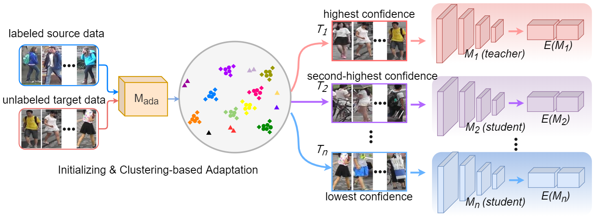
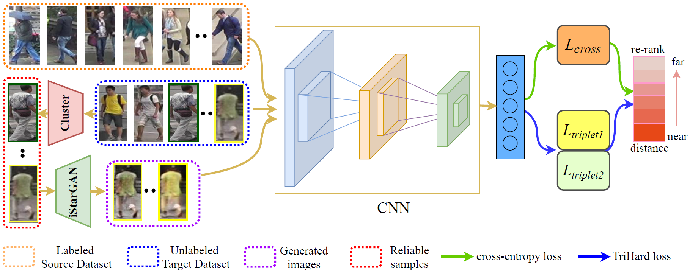
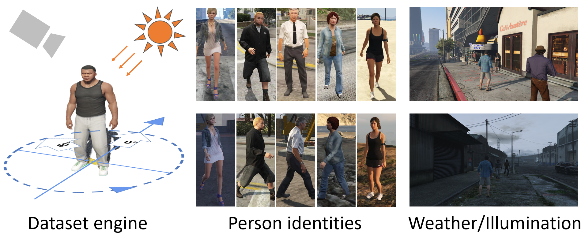
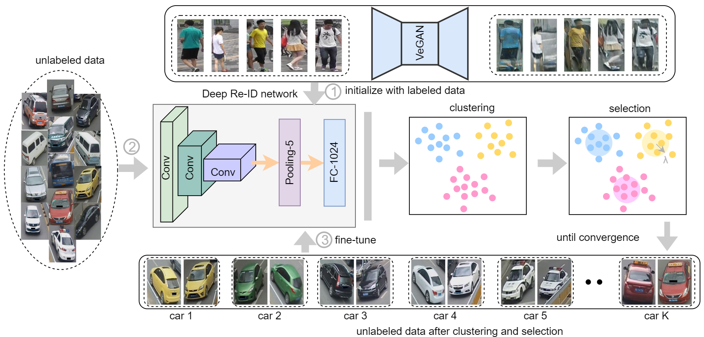

Publications
Preprints:
|
MEW-UNet: Multi-axis Representation Learning in Frequency Domain for Medical Image Segmentation
Jiacheng Ruan, Mingye Xie, Suncheng Xiang#, Ting Liu, Yuzhuo Fu# arXiv preprint, 2022. [arXiv] [Project Page] |
 |
SubFace: Learning with Softmax Approximation for Face Recognition
Hongwei Xu*, Suncheng Xiang*, Dahong Qian arXiv preprint, 2022. [arXiv] [Project Page] |
 |
VTBR: Semantic-based Pretraining for Person Re-Identification
Suncheng Xiang, Zirui Zhang, Mengyuan Guan, Hao Chen, Binjie Yan, Ting Liu, Yuzhuo Fu arXiv preprint, 2021. [arXiv] [Project Page] |
|
Less is More: Learning from Synthetic Data with Fine-grained Attributes for Person Re-Identification
Suncheng Xiang, Guanjie You, Mengyuan Guan, Hao Chen, Feng Wang, Ting Liu, Yuzhuo Fu arXiv preprint, 2021. [arXiv] [Project Page] |
 |
Attribute Analysis with Synthetic Dataset for Person Re-Identification
Suncheng Xiang, Yuzhuo Fu, Guanjie You, Ting Liu arXiv preprint, 2020. [arXiv] |
Journal Papers:
|  |
Learning from Self-Discrepancy via Multiple Co-teaching for Cross-Domain Person Re-Identification
Suncheng Xiang, Yuzhuo Fu, Mengyuan Guan, Ting Liu Machine Learning (MLJ), 2022. Presented in the Weakly Supervised Representation Learning Workshop in IJCAI, 2021. [Paper] [arXiv] [Code] |
 |
Multi-Level Feature Learning with Attention for Person Re-Identification
Suncheng Xiang, Yuzhuo Fu, Hao Chen, Wei Ran, Ting Liu Multimedia Tools and Applications (MTA), 2020. [Paper] |
 |
Progressive Learning with Style Transfer for Distant Domain Adaptation
Suncheng Xiang, Yuzhuo Fu, Ting Liu IET Image Processing (IET-IPR), 2020. [Paper] |
|  |
Unsupervised Person Re-Identification by Hierarchical Cluster and Domain Transfer
Suncheng Xiang, Yuzhuo Fu, Mingye Xie, Zefang Yu, Ting Liu Multimedia Tools and Applications (MTA), 2020. [Paper] |
Conference Papers:
 |
MALUNet: A Muti-Attention and Light-weight UNet for Skin Lesion Segmentation
Jiacheng Ruan, Suncheng Xiang#, Mingye Xie, Ting Liu, Yuzhuo Fu# International Conference on Bioinformatics and Biomedicine (BIBM), 2022. [Paper] [Project Page] |
 |
CDTnet: Cross-Domain Transformer based on Attributes for Person Re-Identification
Mengyuan Guan, Suncheng Xiang, Ting Liu, Yuzhuo Fu International Conference on Multimedia Expo Workshops (ICMEW), 2022. [Paper] |
|  |
Rethinking Illumination for Person Re-Identification: A Unified View
Suncheng Xiang, Guanjie You, Leqi Li, Mengyuan Guan, Ting Liu, Dahong Qian, Yuzhuo Fu IEEE Conference on Computer Vision and Pattern Recognition Workshops (CVPRW), 2022. [Paper] [Project Page] [Slides] [Poster] |
|
Spatial Attention Guided Local Facial Attribute Editing
Mingye Xie, Suncheng Xiang, Feng Wang, Ting Liu, Yuzhuo Fu International Conference on Multimedia Expo (ICME), 2022. [Paper] |
|
Attention Based Facial Expression Manipulation
Feng Wang, Suncheng Xiang, Ting Liu, Yuzhuo Fu International Conference on Multimedia Expo Workshops (ICMEW), 2021. [Paper] |
 |
Taking a Closer Look at Synthesis: Fine-grained Attribute Analysis for Person Re-Identification
Suncheng Xiang, Yuzhuo Fu, Guanjie You, Ting Liu International Conference on Acoustics, Speech and Signal Processing (ICASSP), 2021. [Paper] [arXiv] [Project Page] [Slides] [Poster] [Video] |
 |
Unsupervised Domain Adaptation Through Synthesis For Person Re-Identification
Suncheng Xiang, Yuzhuo Fu, Guanjie You, Ting Liu International Conference on Multimedia and Expo (ICME), 2020. [Paper] [Slides] |
|  |
Deep Unsupervised Progressive Learning for Distant Domain Adaptation
Suncheng Xiang, Yuzhuo Fu, Ting Liu International Conference on Tools with Artificial Intelligence (ICTAI, Oral), 2019. [Paper] [Slides] [Video] |